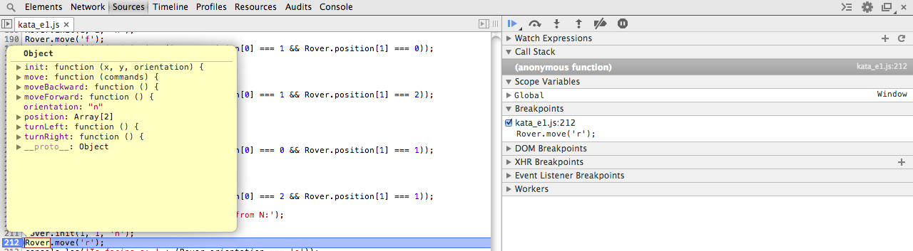
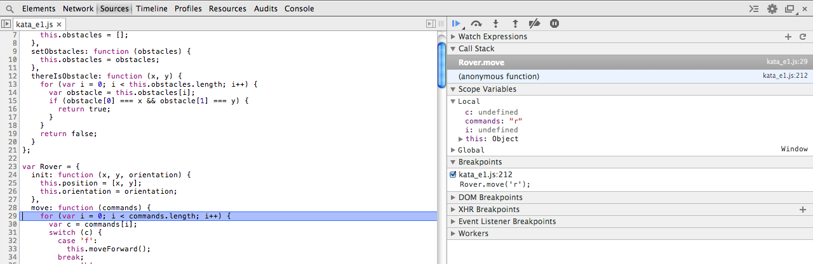
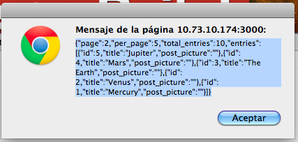

El defer sirve para indicar al explorador que ejecute el script después de cargar la página.
<script defer src="todolist.js" type="text javascript"></script>
En la consola de Chrome, para crear múltiples líneas hay que pulsar:
SHIFT+ENTER
Una vez queramos ejecutar pulsamos
ENTER
Si creamos una variable:
var variable = 1;
Y luego, en la misma consola, introducimos los primeros caracteres y pulsamos tab, la consola autocompletará. Cada página crea un entorno de ejecución, donde podremos almacenar lo que queramos.
La expresión:
'use strict';
Dicta al navegador que debe adaptarse a las buenas prácticas. Por ejemplo, no poner var antes de una variable es una mala práctica. Sólo funciona en exploradores modernos. ¿Por qué es importante esto? Porque así podemos controlar algunas cosas como el scope de las variables.
En Javascript un array tiene un tamaño definido y que no puede ser cambiado. En cambio, a una lista si puedes añadir más contenido.
A la izquierda sólo podemos poner cadenas (sin comillas si cumple con los requisitos de definición de variables).
var object = {
nombre: "Borja",
edad: 24
}
A cada llave se le llama “propiedad”. A la propiedad podemos acceder con
object.propiedad
o bien
object['propiedad']
function setSalario(trabajador, cantidad) {
cantidad = cantidad || 100;
trabajador.salario = cantidad;
}
Si no pasamos cantidad en la función, cantidad será undefined, con lo que devolverá 100, ya que es un truthy.
Una función puede asignarse a una variable.
Todas las interacciones con el documento se hace mediante accesos al DOM (Document Object Model).
var result = document.getElementById('my_id')
result = document.querySelector('#mi_id')
querySelector funciona para todos los tags, clases, ids.
También se puede usar querySelectorAll para acceder a todos los elementos que tengan asignados la clase pasada como argumento.
element.innerHTML = ''
Todo lo que haya “debajo” del elemento con el id llamado con getElementById desaparece, ya que lo cambiamos por ''.
No solo coge lo anidado dentro del elemento sino también el propio elemento.
Sirve para asignar atributos a elementos del DOM.
result.setAttribute
p1.style.backgroundColor = "#ff0";
Sobre el elemento aplicado devuelve una lista “inteligente” de clases asignadas al elemento en cuestión.
p1.listClass.toggle('danger')
Le aplicamos la función toggle a esta lista. En el snippet anterior, si la clase ‘danger’ no está la añade al elemento `p1 .
var newP = document.createElement('p');
Crea un nuevo elemento. En este caso un párrafo.
var n = document.createElement('strong')
n.textContent = "negrita";
Hemos creado el elemento strong con el texto negrita dentro.
p1.children
Muestra los hijos del elemento sobre el que se llama. Es una lista, con la que podemos hacer un for:
document.body.insertBefore(elemento1,elemento2)
Quitar espacios.
La siguiente imagen muestra cómo y cuando se ejecuta los scripts en una html:
La barra azul representa la carga del script (descarga del servidor). La roja la ejecución del script. La verde el “parseo” del html.
Lo más recomendable es ponerle el atributo defer: para que todo el DOM esté listo cuando ejecutemos el script.
El modelo de eventos sirve para reaccionar ante acciones del usuario. Hay dos modelos de eventos: http://codepen.io/lodr/pen/CAtID 1. Capturing (de “arriba” a “abajo”) 2. Bubbling (de “abajo” a “arriba”)
En este ejemplo, cuando se clica sobre d3, d3 es el target. Se mira si el target tiene a alguien a quien avisar (de lo más profundo a lo más alto o alejado).
p1.onclick = function(evt){
console.log(evt);
}
Cuando se pinche en p1 (si se pincha en un hijo, el click subirá (efecto “bubbling”)).
p1.addEventListener('click',a, useCapture)
addEventListener añade “escuchadores de eventos” al elemento sobre el que llamamos a la función. click es el evento ante el cual la función a reaccionará. useCapture es un booleano. true usa capturing (el elemento interceptará el evento de “arriba” a “abajo”); false al revés, usando “bubbling”.
Cuando se ejecuta un script en Chrome, si vamos a la consola podemos determinar puntos concretos donde queremos que la ejecución se pare:

Una vez se ha parado, podemos entrar dentro de esa llamada para inspeccionar con más profundidad qué está pasando si pinchamos sobre el incono :

Como puede apreciarse, en el panel de la derecha hay una serie de pestañas. Una de ellas es la de “Scope Variables”. Si pinchamos sobre ella podemos ver las variables locales y las globales.
Esta técnica de depuración consiste en dejar trazas en el código mediante la función console.log(). Este tipo de depuración puede ser empleada en casos en los que acceder al depurador del explorador no es posible. Por ejemplo, cuando defines una variable, que debería ser local, como global:
for (i = 0; i < array.length; i++)
Si el código ejecuta otro forcomo este (variable global) de manera alterna, nunca llegamos a finalizar ninguno de los for.
Si tenemos un valor que ya está en el rango correcto (positivos).
(posicion + incremento + rango) % rango
Cuando posición en {rango}
Podemos hacer peticiones a un servidor http a través de curl:
bgvo: ~$curl -v "http://10.73.10.174:3000/?page=2" -H "Accept: application/json"
About to connect() to 10.73.10.174 port 3000 (#0)
Trying 10.73.10.174... connected
Connected to 10.73.10.174 (10.73.10.174) port 3000 (#0)
>GET /?page=2 HTTP/1.1
> User-Agent: curl/7.19.7 (universal-apple-darwin10.0) libcurl/7.19.7 OpenSSL/0.9.8y zlib/1.2.3
> Host: 10.73.10.174:3000
> Accept: application/json
>
< HTTP/1.1 200 OK
< X-Frame-Options: SAMEORIGIN
< X-Xss-Protection: 1; mode=block
< X-Content-Type-Options: nosniff
< X-Ua-Compatible: chrome=1
< Content-Type: application/json; charset=utf-8
< Etag: "881dc3aed2b8b3b13891e18933babea0"
< Cache-Control: max-age=0, private, must-revalidate
< X-Request-Id: 7096453f-7e97-46dc-a064-1ab6b14f11c4
< X-Runtime: 0.004245
< Server: WEBrick/1.3.1 (Ruby/2.1.0/2013-12-25)
< Date: Fri, 14 Feb 2014 15:15:46 GMT
< Content-Length: 276
< Connection: Keep-Alive
< Set-Cookie: request_method=GET; path=/
<
* Connection #0 to host 10.73.10.174 left intact
* Closing connection #0
{"page":2,"per_page":5,"total_entries":10,"entries":[{"id": 5,"title":"Jupiter","post_picture":""},{"id": 4,"title":"Mars","post_picture":""},{"id":3,"title":"The Earth","post_picture":""},{"id":2,"title":"Venus","post_picture":""},{"id": 1,"title":"Mercury","post_picture":""}]}
XHR = XMLHttpRequest:
var r = new XMLHttpRequest();
En r ya tenemos un objeto XHR.
Ahora configuramos contra quien queremos que se haga la conexión futura y qué método emplear (GET ene ste caso).
r.open("GET", 'http://127.0.0.1:3000/?page=2');
Definimos los headers:
r.setRequestHeader('Accept', 'application/json');
Definimos qué queremos hacer cuando se reciba respuesta (sobre el objeto r que hemos definido y configurado.
r.onload = function(evt) {
alert(r.responseText);
}
Mandamos el request:
r.send()
A continuación nos mostrará

Realizamos los mismos pasos que en el paso anterior:
r.open("GET", 'http://127.0.0.1:3000/?page=2');
r.setRequestHeader('Accept', 'application/json');
Aquí definimos una variable donde almacenaremos el resultado que se nos devuelve como un objeto de JavaScript. De esa manera ya podemos trabajar con él:
var result;
r.onload = function(evt){
result = JSON.parse(r.responseText);
}
r.send()